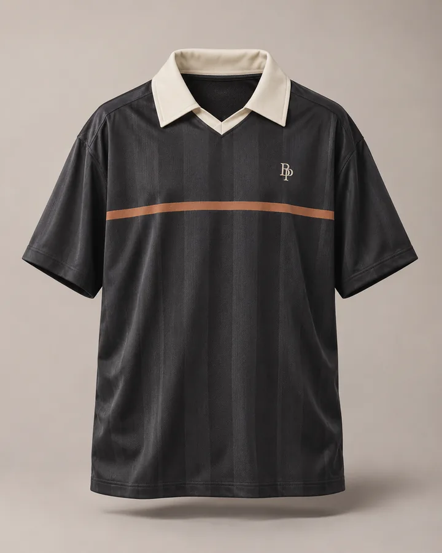
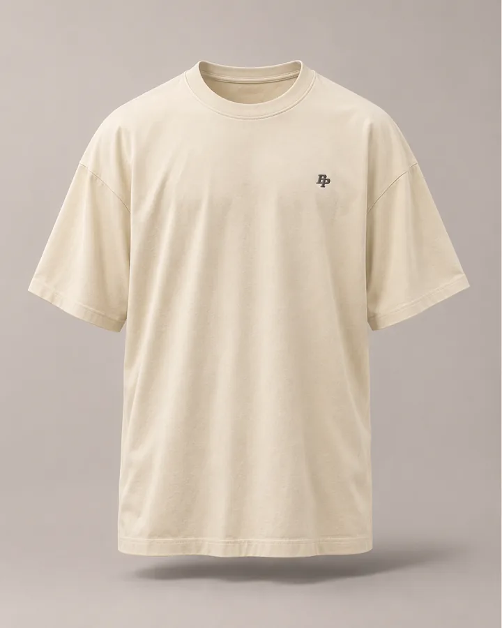
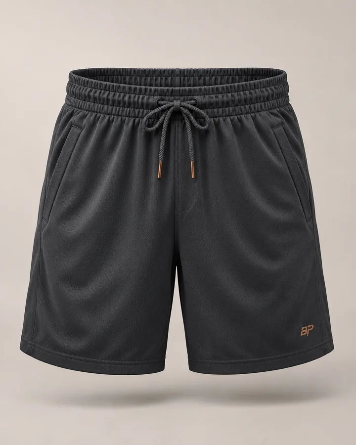
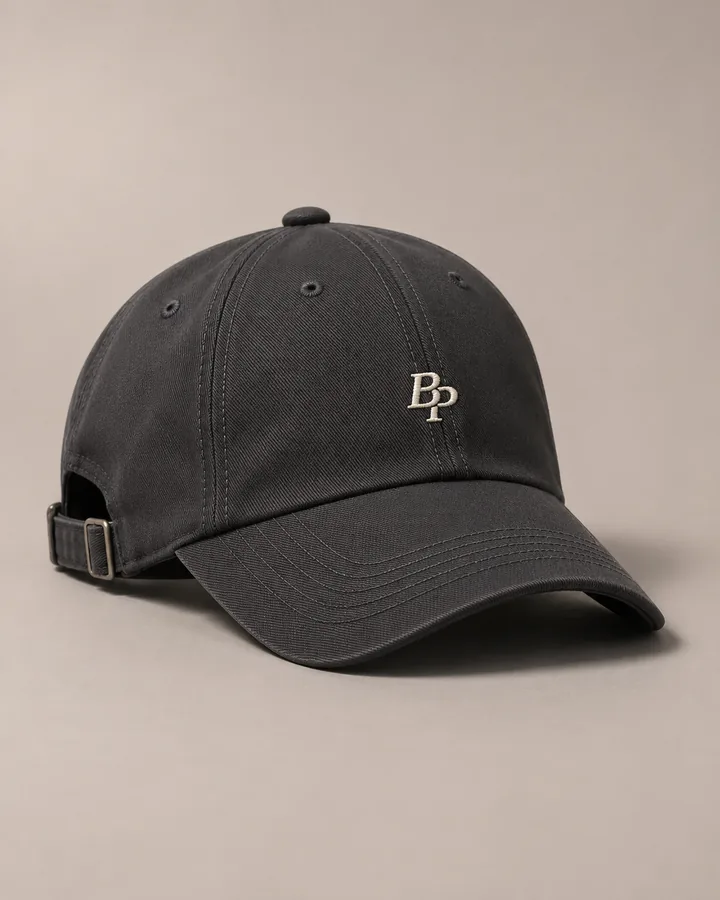
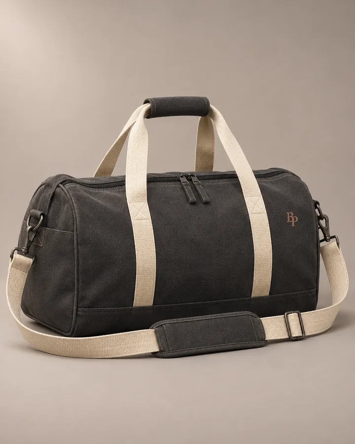

Six considered pieces, four collections, and a shared palette. Explore the original lineup below, then use the fit guide to decide how you want your clothes to feel.
Concept prices are shown in USD. These are fictional product designs, not items available for purchase. Apparel sizes run from XS to 4XL.
Showing all 6 pieces.

Jerseys
Touchline Jersey
$48 USD
Match-day influence, everyday ease. A clean collar and subtle stripe bring a sporting classic into your regular rotation.
Regular / XS?4XL
Fit & Care Details
Straight through the body, with room at the sleeve. Choose a relaxed fit if you prefer more space. Wash cool with similar colors and air dry.
Tracksuits
Transit Tracksuit
$112 USD
A coordinated zip jacket and easy tapered pants. Wear the pair together or split them into the pieces you reach for most.
Relaxed / XS?4XL
Fit & Care Details
The jacket allows room for a tee underneath. The pants have a comfortable tapered shape. Wash the set together on a cool cycle and air dry.

Everyday Performance
Daily Movement Tee
$34 USD
An uncomplicated crewneck with a little breathing room. Equally at home on a campus walk or a casual court session.
Relaxed / XS?4XL
Fit & Care Details
A dropped shoulder and straight hem make layering easy. Prefer a closer fit? Start by comparing the chest width of your favorite tee. Wash cool and reshape while damp.

Everyday Performance
Open Pace Shorts
$42 USD
An easy leg opening, drawcord waist, and useful side pockets. Made for the parts of your day that do not need a uniform.
Relaxed / XS?4XL
Fit & Care Details
Choose by comfortable waist fit first, then consider the room you want through the seat and thigh. Wash cool with the drawcord tied loosely and air dry.

Accessories
Off Hours Cap
$26 USD
A quiet finishing touch, with a curved brim and adjustable fabric strap. A familiar shape that works beyond the sidelines.
Adjustable Strap
Fit & Care Details
Adjust the strap until secure without pressure. Adjustable does not guarantee a fit for every head size. Spot clean and allow to dry naturally.

Accessories
Weekender Duffel
$64 USD
One bag for a change of clothes and the everyday extras. Carry it by the handles or use the detachable shoulder strap.
One Carry Size
Fit & Care Details
A carry accessory, not an apparel size. Check the final bag dimensions and your intended use before any real purchase. Spot clean the fabric; do not machine wash.
Find Your Kind of Fit
Start with the shape you enjoy wearing. This guide explains our concept fits; it does not calculate a size from your body measurements.
Concept apparel runs from XS to 4XL. A size label is only a starting point: compare a garment you already like with the product's measurements before committing to a fit.
No gender-specific sizing assumptions. Comfort, layering, and your own preferences come first. Final garment measurements would be provided before any real sale.